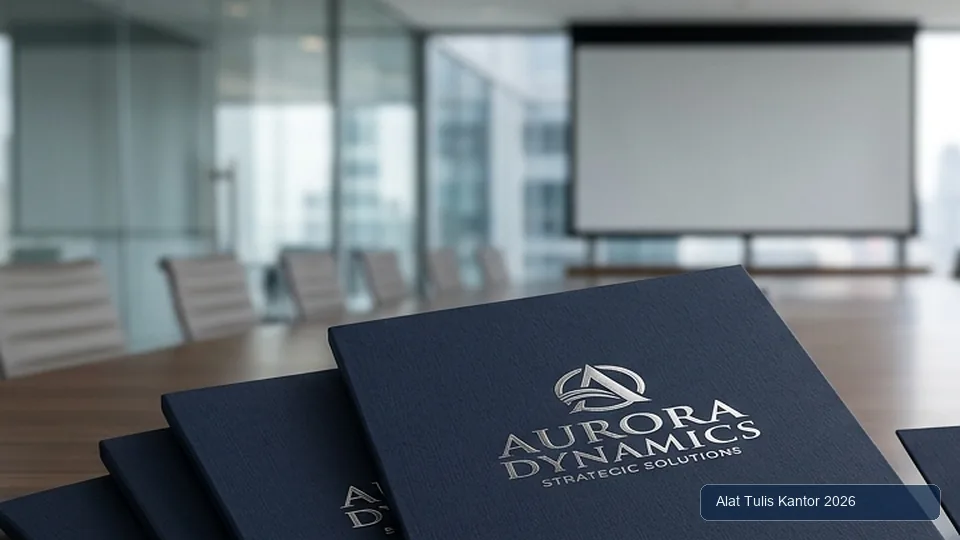

Pentingnya Map Dokumen Custom Logo Perusahaan
Map dokumen dengan logo perusahaan bukan sekadar alat kearsipan biasa, melainkan bagian dari identitas visual korporat yang digunakan dalam berbagai kesempatan formal, mulai dari presentasi klien, penyerahan proposal, hingga dokumentasi kerja sama bisnis. Memilih supplier map dokumen custom yang tepat menjadi krusial agar hasil cetak logo benar-benar rapi dan mencerminkan citra profesional perusahaan, bukan justru terlihat murahan akibat kualitas cetak yang buruk.
Artikel ini membahas cara memilih supplier map dokumen custom logo perusahaan yang tepat melalui mitra distributor alat tulis kantor berpengalaman, lengkap dengan tips mendesain dan memastikan hasil cetak rapi sebelum produksi massal dilakukan. ATK Prima Distribusi menyediakan layanan cetak map dokumen custom untuk kebutuhan korporat Anda. Konsultasi dapat dilakukan via WhatsApp di 088989643555.
Ringkasan Memilih Supplier Map Dokumen Custom Logo
Memilih supplier map dokumen custom logo perusahaan yang tepat membutuhkan verifikasi terhadap empat aspek utama:
- Portofolio Hasil Cetak Sebelumnya: Untuk menilai kualitas ketajaman warna dan kerapian kerja fisik secara riil.
- Teknologi Cetak yang Digunakan: Menyesuaikan antara digital printing, offset, atau hotprint sesuai kebutuhan volume dan detail desain.
- Kemampuan Menerima Revisi Desain: Ketersediaan proses proofing pra-cetak agar koreksi warna dan posisi logo dapat dilakukan sebelum produksi massal.
- Kejelasan Tenggat Waktu Produksi: Menjamin ketepatan jadwal selesai sesuai kebutuhan acara korporat atau serah terima dokumen penting.
Supplier yang transparan dalam keempat aspek ini umumnya menghasilkan produk akhir yang lebih sesuai ekspektasi dibanding memilih berdasarkan penawaran harga termurah semata.
Standar Kualitas B2B: Folder dokumen resmi perusahaan merefleksikan reputasi bisnis Anda di hadapan mitra strategis. Pastikan vendor memiliki SOP proofing sampel fisik sebelum mencetak ribuan eksemplar.
Mengapa Kualitas Cetak Map Custom Memengaruhi Citra Perusahaan
Map dokumen dengan logo yang tercetak buram, warna yang tidak akurat, atau posisi logo yang tidak presisi dapat menimbulkan kesan kurang profesional, terutama ketika map tersebut digunakan dalam pertemuan bisnis penting atau diserahkan kepada klien dan mitra strategis.
Investasi pada supplier yang tepat untuk kebutuhan ini sebanding dengan dampaknya terhadap persepsi profesionalisme perusahaan di mata pihak eksternal. Kerapian detail lipatan, kekuatan kantong dalam (*inner pocket*), serta kilau foil logo mencerminkan standar keunggulan korporasi Anda.
4 Aspek Penting Memilih Supplier Map Dokumen Custom
1. Portofolio Hasil Cetak Sebelumnya
Minta supplier menunjukkan contoh fisik hasil cetak map custom yang pernah mereka kerjakan untuk klien lain, bukan hanya gambar digital di katalog. Contoh fisik memungkinkan Anda menilai langsung kualitas warna, ketajaman logo, dan kualitas bahan map secara nyata.
2. Teknologi Cetak yang Digunakan
Digital printing cocok untuk pesanan volume kecil hingga menengah dengan detail warna kompleks, offset printing lebih ekonomis untuk volume sangat besar dengan desain sederhana, sementara hotprint memberikan kesan premium untuk logo emas atau perak namun terbatas pada satu warna foil. Pilih teknologi yang sesuai dengan kebutuhan volume dan kompleksitas desain logo Anda.
3. Kemampuan Menerima Revisi Desain
Pastikan supplier menyediakan proses proofing atau contoh cetak awal sebelum produksi massal dimulai, sehingga kesalahan warna atau posisi logo dapat dikoreksi terlebih dahulu tanpa harus membatalkan seluruh batch produksi yang sudah terlanjur dicetak.
4. Kejelasan Tenggat Waktu Produksi
Tanyakan estimasi waktu produksi secara spesifik dan pastikan supplier dapat berkomitmen pada tenggat yang disepakati, terutama jika map dibutuhkan untuk acara dengan tanggal yang sudah pasti, seperti presentasi klien atau acara korporat tertentu.
Tabel Perbandingan Teknologi Cetak untuk Map Custom Logo
| Teknologi Cetak | Cocok untuk Volume | Kualitas Detail Warna | Estimasi Biaya |
|---|---|---|---|
| Digital Printing | Kecil-menengah (50-500 unit) | Sangat baik, detail tinggi & gradasi | Sedang-tinggi per unit |
| Offset Printing | Besar (500+ unit) | Baik untuk warna solid & spot color | Rendah per unit pada volume besar |
| Hotprint / Emboss | Semua volume | Terbatas (1-2 warna foil emas/perak) | Tinggi per unit, kesan mewah/eksklusif |
Tips Mendesain Logo untuk Hasil Cetak Map yang Rapi
Untuk memastikan hasil akhir cetak tajam dan bebas distorsi grafis, ikuti panduan persiapan desain berikut:
- Siapkan Format Vektor: Siapkan file logo dalam format vektor (AI, EPS, PDF) untuk hasil cetak yang tajam di berbagai ukuran tanpa pecah resolusi.
- Hindari Gradasi Kompleks pada Hotprint: Hindari penggunaan warna gradasi kompleks jika memilih teknologi hotprint foil logam yang terbatas pada warna solid.
- Tentukan Kode Warna Spesifik: Berikan panduan warna (*color code*) yang spesifik seperti Pantone Matching System (PMS) atau CMYK untuk memastikan akurasi warna hasil cetak.
- Proporsi Posisi Logo: Tentukan posisi dan ukuran logo yang proporsional dengan ukuran map agar tidak terlihat terlalu kecil atau mendominasi secara berlebihan.

Cara Melakukan Quality Control Sebelum Produksi Massal
Lakukan tahapan pengujian mutu berikut sebelum memberikan persetujuan akhir (*approval*) produksi massal:
- Minta contoh cetak (proof fisik) dalam jumlah kecil sebelum menyetujui produksi massal penuh.
- Periksa ketajaman logo, akurasi warna, dan posisi cetak pada contoh yang diterima.
- Verifikasi kualitas bahan map yang digunakan, termasuk ketebalan karton (Art Carton 260–310 gsm / Ivory) dan daya tahan lipatan.
- Pastikan seluruh detail spesifikasi sudah disetujui secara tertulis sebelum memberikan izin produksi massal berlangsung.
Studi Kasus: Branding Konsisten PT Karya Mandiri Sejahtera
PT Karya Mandiri Sejahtera sebelumnya pernah mengalami kekecewaan dengan supplier map custom yang hasil cetaknya tidak konsisten antar batch, dengan warna logo yang sedikit berbeda pada setiap pemesanan ulang.
Setelah beralih ke supplier yang menyediakan color code standar tersimpan dan proses proofing yang konsisten setiap kali pemesanan ulang dilakukan, perusahaan berhasil memastikan konsistensi warna dan kualitas cetak logo mereka di setiap batch produksi, menjaga citra branding yang seragam dalam setiap dokumen yang diserahkan kepada klien.
Cara Memesan Map Dokumen Custom Logo untuk Perusahaan Anda
Untuk mempelajari layanan cetak map dokumen custom logo perusahaan, kunjungi halaman katalog pengarsipan dan map dokumen. Anda juga dapat melihat portofolio lengkap produk pengadaan perkantoran melalui halaman katalog produk ATK sebagai referensi awal sebelum menentukan spesifikasi map yang diinginkan.
Tim spesialis percetakan B2B kami siap membantu kalkulasi kebutuhan bahan, pembuatan dummy sampel, hingga pengiriman armada terpusat se-Jabodetabek.
Menjaga Konsistensi Branding di Berbagai Jenis Kolateral
Map dokumen custom sebaiknya tidak berdiri sendiri, melainkan menjadi bagian dari keseluruhan sistem identitas visual perusahaan yang konsisten dengan kolateral lain seperti kop surat, amplop berkop, kartu nama, dan materi presentasi.
Pastikan supplier yang dipilih dapat memahami dan mereplikasi panduan identitas visual (*brand guideline*) perusahaan Anda secara akurat, bukan hanya mencetak logo tanpa memperhatikan konteks keseluruhan sistem branding yang telah dibangun.
Bekerja sama dengan satu mitra supplier yang sama untuk berbagai kebutuhan cetak branding korporat juga memberikan keuntungan tambahan berupa konsistensi kualitas dan pemahaman mendalam terhadap identitas visual perusahaan, dibanding harus menjelaskan ulang spesifikasi brand setiap kali berpindah dari satu vendor ke vendor lain untuk kebutuhan cetak yang berbeda-beda.
Negosiasi Harga tanpa Mengorbankan Kualitas Cetak
Ketika membandingkan penawaran dari beberapa supplier, hindari godaan memilih semata-mata berdasarkan harga termurah tanpa mempertimbangkan kualitas hasil cetak yang telah diverifikasi melalui portofolio dan sampel fisik.
Supplier dengan harga sedikit lebih tinggi namun konsisten dalam kualitas dan ketepatan waktu produksi umumnya memberikan nilai jangka panjang yang lebih baik dibanding supplier termurah yang berisiko menghasilkan produk dengan kualitas tidak konsisten antar batch pemesanan.
Sebagai strategi negosiasi, mintalah penawaran harga bertingkat berdasarkan volume pemesanan (*tier pricing*). Banyak supplier percetakan menawarkan skema harga yang jauh lebih kompetitif untuk volume pemesanan yang lebih besar, sehingga perusahaan dapat mempertimbangkan konsolidasi kebutuhan map dari berbagai divisi menjadi satu pemesanan besar untuk mendapatkan harga per unit yang lebih ekonomis tanpa mengorbankan standar kualitas yang telah ditetapkan.
Memastikan Keberlanjutan Pasokan untuk Kebutuhan Jangka Panjang
Selain kualitas cetak, pertimbangkan juga kemampuan supplier dalam menjaga keberlanjutan pasokan bahan baku map yang digunakan, terutama jika perusahaan berencana melakukan pemesanan ulang secara berkala setiap tahun. Tanyakan kepada supplier mengenai sumber bahan baku mereka dan apakah ada risiko perubahan spesifikasi bahan di masa mendatang yang dapat memengaruhi konsistensi tampilan map dari waktu ke waktu.
Bagi perusahaan dengan kebutuhan rutin dan volume besar, pertimbangkan untuk menjalin kesepakatan kerja sama jangka panjang dengan supplier yang telah terbukti kualitasnya, sehingga dapat memperoleh keuntungan berupa harga yang lebih stabil, prioritas jadwal produksi, dan konsistensi kualitas yang lebih terjamin dibanding harus mencari supplier baru setiap kali ada kebutuhan pemesanan, yang berisiko menghasilkan variasi kualitas antar vendor yang berbeda-beda.
Pertanyaan yang Sering Diajukan (FAQ)
Kesimpulan
Memilih supplier map dokumen custom logo perusahaan yang tepat membutuhkan evaluasi menyeluruh terhadap portofolio, teknologi cetak, fleksibilitas revisi, dan kejelasan tenggat waktu produksi. Dengan supplier yang tepat, map dokumen dengan logo perusahaan dapat menjadi representasi visual yang konsisten dan profesional dalam setiap interaksi bisnis dengan klien dan mitra kerja.
Butuh map dokumen custom logo perusahaan dengan hasil cetak rapi? Hubungi tim ATK Prima Distribusi via WhatsApp di 088989643555, jangkauan pengiriman aktif se-Jabodetabek dan seluruh Indonesia.